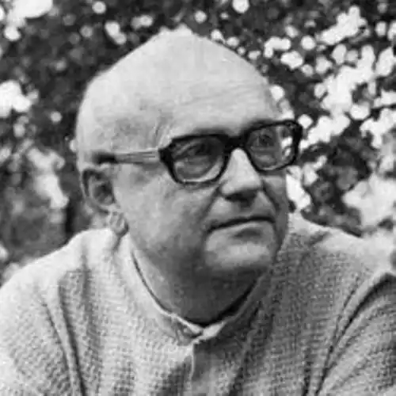

Чеський поет, прозаїк, новеліст, прозаїк, автор книжок для дітей та юнацтва, драматург, теоретик дитячої літератури та перекладач, батько письменника Мартіна Петішки (пише під псевдонімом Едуард Мартін) – автор понад дев'яноста найменувань. які звертаються до п'ятого покоління читачів. Його книги перекладені кількома десятками мов, а також користуються успіхом за кордоном. Загальні продажі його робіт перевищили вісімнадцять мільйонів штук.
Едуард Петішка народився 14 травня 1924 року в Празі. За збігом обставин його батько знав двох великих чеських письменників – зі школи з Ярославом Гашеком, з роботи з Францом Кафкою. Едуард Петішка ходив до гімназії в Брандис-над-Лабем. Виходячи зі свого музичного таланту, який він поділив з матір'ю, він повинен був продовжити навчання в консерваторії, куди його навіть прийняли, але Друга світова війна стала на заваді цьому плану. Під час окупації він працював і лише після 1945 року вступив до Карлового університету, щоб вивчати германістику та порівняльне літературознавство. У 1949 році він отримав докторський диплом і його подальша кар'єра рухалася в бік перекладацької та власної літературної діяльності. На військовій службі він провів лише перші роки 1950-х років.
З 1947 року він був активним в Umelecká beseda, одружився 1948 року. Хоча він зустрів близьких друзів із числа письменників у будинку в Брандізе-над-Лабем, де він оселився, він не був публічно залученим і зосередився на своїй літературній праці на відносно вільна зона дитячої літератури. Лише в шістдесятих він знову публікує дорослу прозу. Помер 6 червня 1987 року в Маріанських Лазнях. Сімейну письменницьку традицію зберіг його син Мартін, який друкувався під іменем Едуард Мартін.